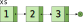

Estructuras de datos persistentes: listas
Máster en Ingeniería Informática
Facultad de Informática
Universidad Complutense de Madrid
- Inmutabilidad y estructuras de datos funcionales
- Listas funcionales
- Operaciones básicas
- Concatenación de listas
- Inversión de listas
- Funciones parciales
- Biblioteca
collections.immutable
Inmutabilidad y estructuras de datos funcionales
Inmutabilidad en programación funcional
- La programación funcional promueve el uso de estructuras de datos inmutables.
- Hasta ahora hemos trabajado con inmutabilidad a nivel de variables (uso de
valfrente avar). - También conocemos las interfaces
List<T>,Set<T>yMap<T>, que representan colecciones de datos inmutables.
Inmutabilidad en programación funcional
- En Kotlin se utilizan las clases de la biblioteca estándar de Java para implementar las interfaces
List<T>,Map<T>,Set<T>.- Por ejemplo, la función
listOf()devuelve un objeto de la claseArrayList.
- Por ejemplo, la función
- Estas clases no estaban inicialmente concebidas para realizar operaciones inmutables.
Ejemplo: seq()
- Escribimos una función
seq()que, dados dos númerosfromyto, construye una lista con la secuencia de números comprendidos entre ambos (sin incluirto).fun seq(from: Int, to: Int): List<Int> = if (from >= to) emptyList() else listOf(from) + seq(from + 1, to) - Ejemplo de ejecución:
println(seq(1, 5)) // → [1, 2, 3, 4]
Ejemplo: seq()
seq(1, 5)
→ [1] + seq(2, 5)
→ [1] + ([2] + seq(3, 5))
→ [1] + ([2] + ([3] + seq(4, 5)))
→ [1] + ([2] + ([3] + ([4] + seq(5, 5))))
→ [1] + ([2] + ([3] + ([4] + [])))
→ [1] + ([2] + ([3] + [4]))
→ [1] + ([2] + [3, 4])
→ [1] + [2, 3, 4]
→ [1, 2, 3, 4]
Ejemplo: seq()
- En la implementación de listas basada en arrays (
ArrayList) cada vez que concatenamos dos listas, se genera un array nuevo con los elementos de ambas. - La ejecución de
seq(0, N)tiene coste O(N2)
Estructuras de datos persistentes
- Las estructuras de datos persistentes permiten implementar operaciones que preserven la estructura original, pero sin necesidad de realizar una copia previa de toda la estructura.
- En su lugar, construyen el resultado de la operación reutilizando parte de la estructura original.
Ejemplo: concatenación de dos listas
val zs = xs + ys
Utilizando arrays:
Ejemplo: concatenación de dos listas
val zs = xs + ys
Utilizando listas persistentes:

- Al realizar la concatenación
xs + ys, se realiza una copia dexs, la cual se «engancha» conys. - La lista
ysforma parte dezs, peroyssigue siendo accesible de manera independiente.
Listas funcionales
Definición del tipo List<T>
- Definimos una clase abstracta vacía:
Tipo de los elementos
abstract class List<out T>
object Nil : List<Nothing>()
data class Cons<T>(
val head: T,
val tail: List<T>
) : List<T>()
Ejemplo: lista [1, 2, 3]
¿Cómo construimos la siguiente lista?

val xs = Cons(1, Cons(2, Cons(3, Nil)))
Examinando la definición
- El objeto
Nilrepresenta la lista vacíaobject Nil : List<Nothing>() - Se declara como
objectporque solamente necesitamos un objeto en memoria que represente la lista vacía. - El objeto tiene tipo
List<Nothing>, porqueNothinges subtipo de cualquier otro.- Por tanto,
Niltambién puede utilizarse donde se requiera unList<Int>o unList<String>.
val xs = Cons(1, Cons(2, Nil)) val ys = Cons("Gerardo", Cons("Alicia", Nil)) - Por tanto,
Examinando la definición
- La clase
Consrepresenta las listas con, al menos, un elemento.data class Cons<T>(val head: T, val tail: List<T>) : List<T>() - El primer elemento se encuentra en el atributo
heady recibe el nombre de cabeza de la lista. - El atributo
tailrepresenta la cola de la lista, y puede serNil, u otra instancia deCons.
Ejemplo: revisando la función seq
- Implementamos la función
seqmediante listas persistentes:fun seq(from: Int, to: Int): List<Int> = if (from >= to) Nil else Cons(from, seq(from + 1, to))seq(1, 5) → Cons(1, seq(2, 5)) → Cons(1, Cons(2, seq(3, 5))) → Cons(1, Cons(2, Cons(3, seq(4, 5)))) → Cons(1, Cons(2, Cons(3, Cons(4, seq(5, 5))))) → Cons(1, Cons(2, Cons(3, Cons(4, Nil)))) - La llamada
seq(0, N)ahora tiene coste O(N).
Operaciones básicas
Operaciones con List<T>
- La definición del tipo
List<T>es recursiva:abstract class List<out T> object Nil : List<Nothing>() data class Cons<T>(val head: T, val tail: List<T>) : List<T>() - Las funciones que realicen recorridos sobre listas también serán recursivas.
Ejemplo: método length()
- Definimos un método que calcule el número de elementos de la lista:
fun <T> List<T>.length(): Int = when (this) { Error de compilación
is Nil -> 0
is Cons -> 1 + this.tail.length()
}
else, ya que podría haber más subclases de List<T>.
Ejemplo: método length()
- Lanzar una excepción en el caso
else:fun <T> List<T>.length(): Int = when (this) { is Nil -> 0 is Cons -> 1 + tail.length() else -> throw UnsupportedOperationException() ¡Feo! } - Prohibir que
List<T>tenga más subclases, aparte de las ya definidas:NilyCons.- Es lo que haremos a continuación.
Definición definitiva de List<T>
sealed class List<out T>
object Nil : List<Nothing>()
data class Cons<T>(val head: T, val tail: List<T>) : List<T>()
- Mediante
sealedindicamos que la claseList<T>es abstracta, pero se prohibe heredar de ella en cualquier otro sitio que no sea el módulo en el que está definida. - De este modo, el compilador puede saber que la clase un objeto de tipo
List<T>ha de ser, o bienNil, o bien una instancia deCons.
Ejemplo: método length()
Declarando List<T> como sealed, la siguiente definición ya se acepta por el compilador:
fun <T> List<T>.length(): Int = when (this) {
is Nil -> 0
is Cons -> 1 + this.tail.length()
}
Versión con parámetros acumuladores y recursión de cola:
fun <T> List<T>.length(): Int {
tailrec fun List<T>.lengthRec(ac: Int): Int = when (this) {
is Nil -> ac
is Cons -> tail.lengthRec(ac + 1)
}
return this.lengthAc(0)
}
Coste: O(N), donde N es la longitud de la lista.
Ejemplo: método length()
- ¿Coste O(N) solo para obtener la longitud de la lista?
- Es posible mejorar ese coste almacenando un atributo en la clase
Listque contenga la longitud de la lista.- (Lo dejamos como ejercicio)
- Con esto podemos obtener la longitud de una lista en coste O(1).
- ...a costa de guardar un atributo adicional en cada celda.
Ejemplo: suma de los elementos de una lista
Sin recursión de cola:
fun List<Int>.sum(): Int = when (this) {
is Nil -> 0
is Cons -> this.head + this.tail.sum()
}
Con recursión de cola y parámetro acumulador:
fun List<Int>.sum(): Int {
tailrec fun List<Int>.sumRec(ac: Int): Int = when (this) {
is Nil -> ac
is Cons -> tail.sumRec(ac + head)
}
return this.sumRec(0)
}
Coste: O(N), donde N es la longitud de la lista.
Concatenación de listas
Concatenar dos listas
- Definimos una función
plusque, dadas dos listasxseys, devuelva el resultado de concatenar ambas:fun <T> plus(xs: List<T>, ys: List<T>): List<T> = when (xs) { is Nil -> ys is Cons -> Cons(xs.head, plus(xs.tail, ys)) } - Ejemplo:
plus(Cons(1, Cons(2, Cons(3, Nil))), Cons(4, Cons(5, Nil))) → Cons(1, plus(Cons(2, Cons(3, Nil)), Cons(4, Cons(5, Nil)))) → Cons(1, Cons(2, plus(Cons(3, Nil), Cons(4, Cons(5, Nil))))) → Cons(1, Cons(2, Cons(3, plus(Nil, Cons(4, Cons(5, Nil)))))) → Cons(1, Cons(2, Cons(3, Cons(4, Cons(5, Nil)))))
Concatenar dos listas
val xs = Cons(1, Cons(2, Cons(3, Nil)))
val ys = Cons(4, Cons(5, Nil))
val zs = plus(xs, ys)

Coste: O(N), donde N es la longitud de la lista pasada como primer parámetro.
Concatenar dos listas
Podemos hacer que plus sea más fácil de utilizar si lo declaramos como una función de extensión infija:
infix fun <T> List<T>.plus(other: List<T>): List<T> = when (this) {
is Nil -> other
is Cons -> Cons(this.head, this.tail plus ys)
}
Ejemplo de uso:
val zs = xs plus ys
Concatenar dos listass
Incluso mejor: podemos sobrecargar el operador + en Kotlin, declarando la función plus como operator:
operator fun <T> List<T>.plus(other: List<T>): List<T> = when (this) {
is Nil -> other
is Cons -> Cons(this.head, this.tail + ys)
}
Ejemplo de uso:
val zs = xs + ys
Sobrecarga de operadores en Kotlin: [+]
Inversión de listas
Invertir una lista
- Implementamos un método
reversed()que invierte los elementos de la listathis. - Por ejemplo, si
xsdenota la lista[1, 2, 3],xs.reversed()devuelve la lista[3, 2, 1].
fun <T> List<T>.reversed(): List<T> = when (this) {
is Nil -> Nil
is Cons -> tail.reversed() + Cons(head, Nil)
}
Invertir una lista
fun <T> List<T>.reversed(): List<T> = when (this) {
is Nil -> Nil
is Cons -> tail.reversed() + Cons(head, Nil)
}
Cons(1, Cons(2, Cons(3, Nil))).reversed()
→ Cons(2, Cons(3, Nil)).reversed() + Cons(1, Nil)
→ (Cons(3, Nil).reversed() + Cons(2, Nil)) + Cons(1, Nil)
→ ((Nil.reversed() + Cons(3, Nil)) + Cons(2, Nil)) + Cons(1, Nil)
→ (Nil + Cons(3, Nil)) + Cons(2, Nil)) + Cons(1, Nil)
→ (Cons(3, Nil) + Cons(2, Nil)) + Cons(1, Nil)
→ ...
→ Cons(3, Cons(2, Nil)) + Cons(1, Nil)
→ ...
→ Cons(3, Cons(2, Cons(1, Nil)))
Invertir una lista
fun <T> List<T>.reversed(): List<T> = when (this) {
is Nil -> Nil
is Cons -> tail.reversed() + Cons(head, Nil)
}
[1, 2, 3].reversed()
→ [2, 3].reversed() + [1]
→ ([3].reversed() + [2]) + [1]
→ (([].reversed() + [3]) + [2]) + [1]
→ (([] + [3]) + [2]) + [1]
→ ([3] + [2]) + [1]
→ ...
→ [3, 2] + [1]
→ ...
→ [3, 2, 1]
Invertir una lista
fun <T> List<T>.reversed(): List<T> = when (this) {
is Nil -> Nil
is Cons -> tail.reversed() + Cons(head, Nil)
}
- ¿Cuál es el coste del algoritmo?
- Recordemos que la operación
xs + ystiene coste lineal con respecto a la longitud listaxs. - Si
zses una lista de tamaño N, la llamada azs.reversed()hace N llamadas al operador+- ...cada una con una lista cada vez más grande que la anterior.
- Por tanto, el coste es O(N2).
Mejorando la eficiencia de reversed()
- Es posible mejorar el coste mediante un parámetro acumulador:
fun <T> List<T>.reversed(): List<T> { tailrec fun List<T>.reversedRec(ac: List<T>): List<T> = when(this) { is Nil -> ac is Cons -> tail.reversedRec(Cons(head, ac)) } // Llamada inicial: return reversedRec(Nil) } - El parámetro
acacumula la lista invertida.
Mejorando la eficiencia de reversed()
fun <T> List<T>.reversed(): List<T> {
tailrec fun List<T>.reversedRec(ac: List<T>): List<T> = when(this) {
is Nil -> ac
is Cons -> tail.reversedRec(Cons(head, ac))
}
// Llamada inicial:
return reversedRec(Nil)
}
Cons(1, Cons(2, Cons(3, Nil))).reversed()
→ Cons(1, Cons(2, Cons(3, Nil))).reversedRec(Nil)
→ Cons(2, Cons(3, Nil)).reversedRec(Cons(1, Nil))
→ Cons(3, Nil).reversedRec(Cons(2, Cons(1, Nil)))
→ Nil.reversedRec(Cons(3, Cons(2, Cons(1, Nil))))
→ Cons(3, Cons(2, Cons(1, Nil)))
Mejorando la eficiencia de reversed()
fun <T> List<T>.reversed(): List<T> {
tailrec fun List<T>.reversedRec(ac: List<T>): List<T> = when(this) {
is Nil -> ac
is Cons -> tail.reversedRec(Cons(head, ac))
}
// Llamada inicial:
return reversedRec(Nil)
}
[1, 2, 3].reversed()
→ [1, 2, 3].reversedRec([])
→ [2, 3].reversedRec([1])
→ [3].reversedRec([2, 1])
→ [].reversedRec([3, 2, 1])
→ [3, 2, 1]
Coste: O(N), donde N es la longitud de la lista.
Funciones parciales
Ejemplo: last()
- Implementamos una función que devuelva el último elemento de una lista:
fun <T> List<T>.last(): T = when(this) { is Nil -> ??? ¿Qué devolvemos si la lista es vacía? is Cons -> when (tail) { is Nil -> head is Cons -> tail.last() } } - La función es parcial: solo puede aplicarse a listas no vacías.
- ¿Qué hacemos si llamamos a
last()sobre una lista vacía.
¿Cómo tratar las funciones parciales?
Hay varias posibilidades:
- Lanzar una excepción en el caso en el que
thises la lista vacía.- Evitaremos las excepciones en esta asignatura.
- Devolver un tipo
Option<T>, o devolvernull.- Veremos ambas alternativas más adelante (pero no ahora).
- Prohibir las llamadas con listas no vacías.
- Es lo que haremos a continuación.
¿Cómo tratar las funciones parciales?
fun <T> Cons<T>.last(): T = when(this.tail) {
is Nil -> head
is Cons -> this.tail.last()
}
- Ya no se permite llamar a
last()sobre la listaNil.
¿Cómo tratar las funciones parciales?
- Si queremos que una función solamente sea aplicable a una lista no vacía, basta declarar el tipo del parámetro (o receptor) como
Cons<T>, en lugar deList<T>. - Como el nombre
Cons<T>no es demasiado ilustrativo, Kotlin nos permite declarar tipos nuevos como sinónimos de otros:typealias NonEmptyList<T> = Cons<T>
¿Cómo tratar las funciones parciales?
Resultado:
fun <T> NonEmptyList<T>.last(): T = when(this.tail) {
is Nil -> head
is Cons -> this.tail.last()
}
Biblioteca collections.immutable
Biblioteca collections.immutable
- La biblioteca estándar de Kotlin no proporciona soporte para EDs persistentes.
- Las colecciones inmutables están basadas en clases ya existentes de Java.
- Por ejemplo,
listOf(...)devuelve unArrayList.
- Sin embargo, existe una biblioteca separada para EDs persistentes: kotlinx.collections.immutable
Uso de la biblioteca con proyectos Gradle
- Basta con añadir la siguiente línea en la sección
dependenciesdel ficherobuild.gradle.ktscon la configuración del proyecto:dependencies { ... implementation("org.jetbrains.kotlinx:kotlinx-collections-immutable:0.3.5") } - Al compilar el proyecto, Gradle descarga e incorpora las clases de la biblioteca en el class path.
Ejemplo de uso
val l1 = persistentListOf(1, 2, 3)
val l2 = persistentListOf(4, 5)
val l3 = println(l1 + l2)
println(l1) // → [1, 2, 3]
println(l2) // → [4, 5]
println(l3) // → [1, 2, 3, 4, 5]
Ejemplo de uso
- El objeto devuelto por
persistentListOf()implementa la interfazList<T>de la biblioteca de Kotlin, por lo que es posible utilizar cualquier función de esta interfaz [+].val l1 = persistentListOf(1, 2, 3) val l2 = persistentListOf(4, 5) val l3 = l1 + l2 println(l3.reversed()) // → [5, 4, 3, 2, 1] println(l3.sum()) // → 9
Bibliografía
- M. Vermeulen, R. Bjarnason, P. Chiusano
Functional Programming in Kotlin
Manning Publications (2021)
Capítulo 3 -
Kotlin Standard Library: interfaz List<T>
https://kotlinlang.org/api/latest/jvm/stdlib/